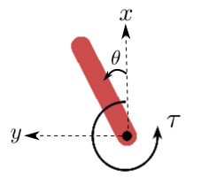
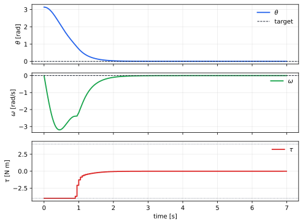

Controlled Pendulum
This example stabilizes the classical torque-driven pendulum benchmark. The plant state is angle \(\theta\) and angular velocity \(\omega\), and the control variable is pivot torque \(\tau\).

The example is intentionally small, but it exercises the main Regelum ideas: continuous dynamics are declared as a right-hand side, discrete nodes declare their state reads, and phases turn those local declarations into an executable schedule.
Dynamics
The plant uses the uniform-rod pendulum dynamics
The controller is a clipped PD law around the upright equilibrium:
The executable example uses \(g=9.81\), \(\ell=1.0\), \(m=1.0\),
\(k_p=14.0\), \(k_d=4.0\), and \(\tau_{\max}=4.0\). The plant is integrated at
100 Hz with dt="0.01", while the controller runs at 20 Hz with dt="0.05".
Between controller updates, Controller.State.tau is sampled and held.
Logical Nodes
The closed-loop model is decomposed into four logical nodes:
| Node | Role |
|---|---|
pendulum_plant |
An ODESystem wrapping PendulumODE; it integrates \(\theta,\omega\) and reads held \(\tau\). |
observer |
Reads plant state and publishes sin_theta, cos_theta, and omega. |
controller |
Reads observer features and writes saturated tau. |
logger |
Reads plant state, clock time, and held torque, then appends a sample. |
That split is the point of the example. The plant does not know how torque is computed. The controller does not know how the ODE is integrated. The logger does not own any of the physical state. Each node declares only the state it owns and the ports it reads.
Define The Plant
PendulumODE is the continuous primitive. It inherits from rg.ODENode, so it
only specifies state and dstate(...); integration settings are supplied later
by rg.ODESystem.
class PendulumODE(rg.ODENode):
mass: float = 1.0
length: float = 1.0
gravity: float = 9.81
def __init__(self, theta0: float, omega0: float) -> None:
self.theta0 = theta0
self.omega0 = omega0
class State(rg.NodeState):
theta: float = rg.var(init=lambda self: cast(PendulumODE, self).theta0)
omega: float = rg.var(init=lambda self: cast(PendulumODE, self).omega0)
def dstate(
self,
state: State,
tau: float = rg.src(lambda: Controller.State.tau),
) -> State:
tau_c = 3.0 / (self.mass * self.length**2)
g_c = (3.0 * self.gravity) / (2.0 * self.length)
return self.State(
theta=state.omega,
omega=g_c * ca.sin(state.theta) + tau_c * tau,
)
The theta and omega variables use lazy initializers. At runtime the node
instance is passed to the initializer, so the constructor values become the
initial ODE state.
The torque input uses a lazy source reference:
rg.src(lambda: Controller.State.tau). The lambda only delays evaluation
until Controller exists in the Python module. Semantically it is still a
plain state-port read.
Observer
Observer is an ordinary discrete node. This snippet uses a separate
Inputs namespace, which is useful when a node has several named reads.
class Observer(rg.Node):
class State(rg.NodeState):
sin_theta: float
cos_theta: float
omega: float
class Inputs(rg.NodeInputs):
theta: float = rg.src(PendulumODE.State.theta)
omega: float = rg.src(PendulumODE.State.omega)
def update(self, inputs: Inputs) -> State:
return self.State(
sin_theta=math.sin(inputs.theta),
cos_theta=math.cos(inputs.theta),
omega=inputs.omega,
)
The return value is a new Observer.State object. Regelum commits it after the
node runs, and later nodes in the same phase can read those ports.
Controller
Controller shows the compact input style: inputs are declared directly in the
update(...) signature. This is equivalent to a separate Inputs namespace.
class Controller(rg.Node):
dt: str = "0.05"
tau_max: float = 4.0
def __init__(self, kp: float, kd: float) -> None:
self.kp = kp
self.kd = kd
class State(rg.NodeState):
tau: float
def update(
self,
sin_theta: float = rg.src(Observer.State.sin_theta),
cos_theta: float = rg.src(Observer.State.cos_theta),
omega: float = rg.src(Observer.State.omega),
) -> State:
theta = math.atan2(sin_theta, cos_theta)
raw = -self.kp * theta - self.kd * omega
tau = float(np.clip(raw, -self.tau_max, self.tau_max))
return self.State(tau=tau)
The class-level dt means the controller runs every 0.05 seconds. The plant
integrates every 0.01 seconds, so on intermediate base ticks the plant reads
the latest committed Controller.State.tau.
Logger
Logger depends on its own previous state. Regelum passes the previous
Logger.State object into update(...) because the parameter is annotated as
State.
class Logger(rg.Node):
class State(rg.NodeState):
samples: list[tuple[float, float, float, float]] = rg.var(init=list)
def update(
self,
state: State,
time: float = rg.src(rg.Clock.time),
theta: float = rg.src(PendulumODE.State.theta),
omega: float = rg.src(PendulumODE.State.omega),
tau: float = rg.src(Controller.State.tau),
) -> State:
state.samples.append((time, theta, omega, tau))
return self.State(samples=state.samples)
rg.Clock.time is a library-provided system source. It is advanced by the PRS
runtime and can be read like any other input port.
Build The PRS
The upper-level model contains no numerical equations. It instantiates nodes,
wraps the ODE node in an ODESystem, and declares the phase graph.
pendulum = PendulumODE(theta0=theta0, omega0=omega0)
plant = rg.ODESystem(nodes=(pendulum,), dt="0.01")
observer = Observer()
controller = Controller(kp=kp, kd=kd)
logger = Logger()
system = rg.PhasedReactiveSystem(
phases=[
rg.Phase(
"observe_and_control",
nodes=(observer, controller, logger),
transitions=(rg.Goto("plant"),),
is_initial=True,
),
rg.Phase(
"plant",
nodes=(plant,),
transitions=(rg.Goto(rg.terminate),),
),
],
)
One tick starts in observe_and_control. Within that phase, Regelum resolves
the dataflow as Observer -> Controller -> Logger: the observer publishes
features, the controller writes torque, and the logger records the current
plant state plus held torque. The tick then enters plant, where the ODE
system integrates PendulumODE, and then terminates.
The active nodes of a phase must form an acyclic dependency graph with respect to state reads. Phase transitions then define the top-level tick schedule. Regelum checks both layers before simulation begins.
Phase Graph
flowchart LR
init([init]) --> observeControl["observe_and_control<br/>observer + controller + logger"]
observeControl --> plant["plant<br/>pendulum_plant"]
plant --> done([⊥])
classDef observeControl fill:#15803d22,stroke:#15803d,color:#111318
classDef plant fill:#2f6fed22,stroke:#2f6fed,color:#111318
class observeControl observeControl
class plant plantNode Graph
The low-level node graph records data dependencies. Dashed state arrows represent previous-state reads: the plant ODE reads previous \(\theta,\omega\), and the logger appends to previous samples.
flowchart LR
clock["Clock"] --> logger["logger"]
pendulum["pendulum_plant"] --> observer["observer"]
observer --> controller["controller"]
controller --> pendulum
pendulum --> logger
controller --> logger
pendulum_state(("state")) -.-> pendulum
logger_state(("state")) -.-> logger
classDef observeControl fill:#15803d22,stroke:#15803d,color:#111318
classDef plant fill:#2f6fed22,stroke:#2f6fed,color:#111318
classDef clock fill:transparent,stroke:currentColor,stroke-dasharray:6 4
classDef state fill:#94a3b822,stroke:#94a3b8,stroke-dasharray:3 3,color:#111318
class observer,controller,logger observeControl
class pendulum plant
class clock clock
class pendulum_state,logger_state stateTables
| Phase | Nodes | Role |
|---|---|---|
| observe_and_control | Observer, Controller(dt="0.05"), Logger |
Publishes features, computes held torque, and records a sample. |
| plant | ODESystem(PendulumODE, dt="0.01") |
Integrates the continuous pendulum dynamics on every base tick. |
| Node | State | Inputs |
|---|---|---|
| PendulumODE | theta, omega |
Controller.State.tau |
| Observer | sin_theta, cos_theta, omega |
PendulumODE.State.theta, PendulumODE.State.omega |
| Controller | tau |
Observer.State.sin_theta, Observer.State.cos_theta, Observer.State.omega |
| Logger | samples |
Clock.time, plant state, held torque |
Run The Simulation
Run the standalone example:
Save the response plot:
uv run python examples/controlled_pendulum/standalone.py \
--output docs/assets/examples/pendulum/controlled_pendulum_response_torque4.svg
The plot shows angle, angular velocity, and the held torque. The stair-step
torque trace is the direct sample-and-hold effect: Controller updates tau
five times more slowly (dt="0.05") than pendulum_plant is integrated
(dt="0.01").

Open In Marimo
Open the notebook in molab:
Molab opens the notebook from the published main branch and installs
regelum from PyPI, plus plotting dependencies, using the notebook's inline
dependency metadata.
Standalone Python listing
from __future__ import annotations
import argparse
import math
from pathlib import Path
from typing import cast
import casadi as ca
import numpy as np
import regelum as rg
class PendulumODE(rg.ODENode):
mass: float = 1.0
length: float = 1.0
gravity: float = 9.81
def __init__(self, theta0: float, omega0: float) -> None:
self.theta0 = theta0
self.omega0 = omega0
class State(rg.NodeState):
theta: float = rg.var(init=lambda self: cast(PendulumODE, self).theta0)
omega: float = rg.var(init=lambda self: cast(PendulumODE, self).omega0)
def dstate( # ty: ignore[invalid-method-override]
self,
state: State,
tau: float = rg.src(lambda: Controller.State.tau),
) -> State:
tau_c = 3.0 / (self.mass * self.length**2)
g_c = (3.0 * self.gravity) / (2.0 * self.length)
return self.State(
theta=state.omega,
omega=g_c * ca.sin(state.theta) + tau_c * tau,
)
class Observer(rg.Node):
class State(rg.NodeState):
sin_theta: float
cos_theta: float
omega: float
class Inputs(rg.NodeInputs):
theta: float = rg.src(PendulumODE.State.theta)
omega: float = rg.src(PendulumODE.State.omega)
def update(self, inputs: Inputs) -> State:
return self.State(
sin_theta=math.sin(inputs.theta),
cos_theta=math.cos(inputs.theta),
omega=inputs.omega,
)
class Controller(rg.Node):
dt: str = "0.05"
tau_max: float = 4.0
def __init__(self, kp: float, kd: float) -> None:
self.kp = kp
self.kd = kd
class State(rg.NodeState):
tau: float
def update(
self,
sin_theta: float = rg.src(Observer.State.sin_theta),
cos_theta: float = rg.src(Observer.State.cos_theta),
omega: float = rg.src(Observer.State.omega),
) -> State:
theta = math.atan2(sin_theta, cos_theta)
raw = -self.kp * theta - self.kd * omega
tau = float(np.clip(raw, -self.tau_max, self.tau_max))
return self.State(tau=tau)
class Logger(rg.Node):
class State(rg.NodeState):
samples: list[tuple[float, float, float, float]] = rg.var(init=list)
def update(
self,
state: State,
time: float = rg.src(rg.Clock.time),
theta: float = rg.src(PendulumODE.State.theta),
omega: float = rg.src(PendulumODE.State.omega),
tau: float = rg.src(Controller.State.tau),
) -> State:
state.samples.append((time, theta, omega, tau))
return self.State(samples=state.samples)
def plot(
samples: list[tuple[float, float, float, float]],
*,
output_path: Path | None = None,
show: bool = False,
) -> None:
import matplotlib.pyplot as plt
time = [sample[0] for sample in samples]
theta = [sample[1] for sample in samples]
omega = [sample[2] for sample in samples]
tau = [sample[3] for sample in samples]
plt.style.use("default")
fig, axes = plt.subplots(3, 1, figsize=(7.0, 5.2), sharex=True)
axes[0].plot(time, theta, label=r"$\theta$", color="#2563eb", linewidth=1.8)
axes[0].axhline(0.0, color="#111827", linestyle="--", linewidth=0.9, label="target")
axes[0].set_ylabel(r"$\theta$ [rad]")
axes[0].grid(alpha=0.25)
axes[0].legend(loc="upper right", frameon=False)
axes[1].plot(time, omega, label=r"$\omega$", color="#16a34a", linewidth=1.8)
axes[1].axhline(0.0, color="#111827", linestyle="--", linewidth=0.9)
axes[1].set_ylabel(r"$\omega$ [rad/s]")
axes[1].grid(alpha=0.25)
axes[1].legend(loc="upper right", frameon=False)
axes[2].plot(time, tau, drawstyle="steps-post", label=r"$\tau$", color="#dc2626", linewidth=1.8)
axes[2].axhline(4.0, color="#6b7280", linestyle=":", linewidth=0.9)
axes[2].axhline(-4.0, color="#6b7280", linestyle=":", linewidth=0.9)
axes[2].set_xlabel("time [s]")
axes[2].set_ylabel(r"$\tau$ [N m]")
axes[2].grid(alpha=0.25)
axes[2].legend(loc="upper right", frameon=False)
fig.tight_layout()
if output_path is not None:
output_path.parent.mkdir(parents=True, exist_ok=True)
fig.savefig(output_path, bbox_inches="tight")
if show:
plt.show()
plt.close(fig)
def run(
theta0: float = math.pi,
omega0: float = 0.0,
kp: float = 14.0,
kd: float = 4.0,
steps: int = 700,
) -> list[tuple[float, float, float, float]]:
pendulum = PendulumODE(theta0=theta0, omega0=omega0)
plant = rg.ODESystem(nodes=(pendulum,), dt="0.01")
observer = Observer()
controller = Controller(kp=kp, kd=kd)
logger = Logger()
system = rg.PhasedReactiveSystem(
phases=[
rg.Phase(
"observe_and_control",
nodes=(observer, controller, logger),
transitions=(rg.Goto("plant"),),
is_initial=True,
),
rg.Phase(
"plant",
nodes=(plant,),
transitions=(rg.Goto(rg.terminate),),
),
],
)
system.run(steps)
return cast(list[tuple[float, float, float, float]], system.read(Logger.State.samples))
def main() -> None:
parser = argparse.ArgumentParser(description="Run the controlled pendulum example.")
parser.add_argument("--theta0", type=float, default=math.pi)
parser.add_argument("--omega0", type=float, default=0.0)
parser.add_argument("--kp", type=float, default=14.0)
parser.add_argument("--kd", type=float, default=4.0)
parser.add_argument("--steps", type=int, default=700)
parser.add_argument("--output", type=Path)
parser.add_argument("--show", action="store_true")
args = parser.parse_args()
samples = run(
theta0=args.theta0,
omega0=args.omega0,
kp=args.kp,
kd=args.kd,
steps=args.steps,
)
plot(samples, output_path=args.output, show=args.show)
time, theta, omega, tau = samples[-1]
print(f"time={time:.2f}")
print(f"theta={theta:.6f}")
print(f"omega={omega:.6f}")
print(f"tau={tau:.6f}")
if __name__ == "__main__":
main()